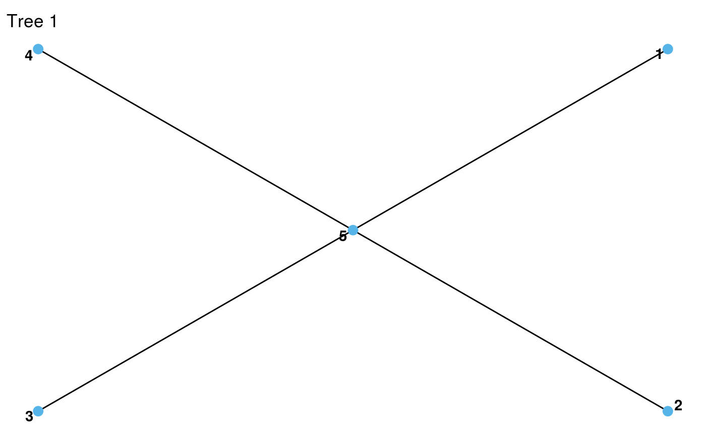
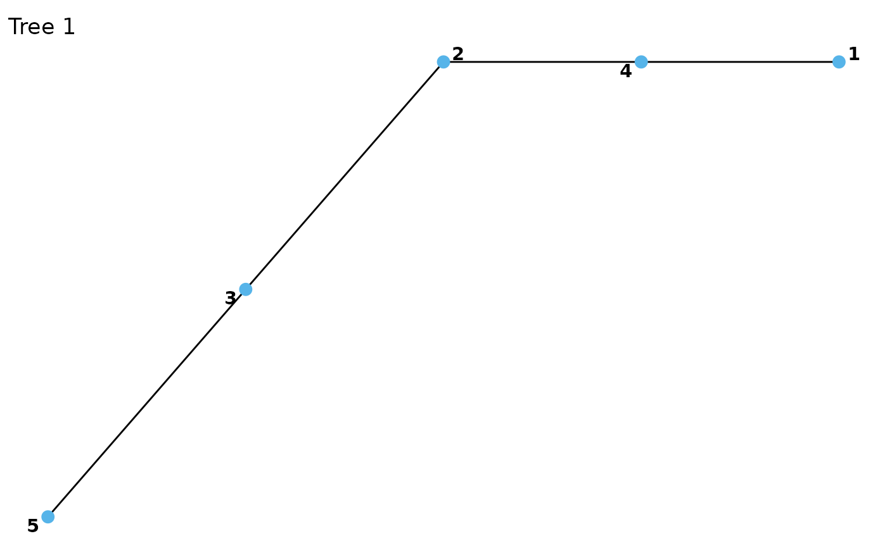

R-vine structures are compressed representations encoding the tree structure
of the vine, i.e. the conditioned/conditioning variables of each edge. The
functions [cvine_structure()] or [dvine_structure()] give a simpler way
to construct C-vines (every tree is a star) and D-vines (every tree is a
path), respectively (see Examples).
rvine_structure(order, struct_array = list(), is_natural_order = FALSE)
cvine_structure(order, trunc_lvl = Inf)
dvine_structure(order, trunc_lvl = Inf)
rvine_matrix(matrix)a vector of positive integers.
a list of vectors of positive integers. The vectors
represent rows of the r-rvine structure and the number of elements have to
be compatible with the order vector. If empty, the model is 0-truncated.
whether struct_array is assumed to be provided in
natural order already (a structure is in natural order if the anti-
diagonal is 1, .., d from bottom left to top right).
the truncation level
an R-vine matrix, see Details.
Either an rvine_structure or an rvine_matrix.
The R-vine structure is essentially a lower-triangular matrix/triangular array, with a notation that differs from the one in the VineCopula package. An example array is
4 4 4 4
3 3 3
2 2
1which encodes the following pair-copulas:
| tree | edge | pair-copulas |
| 0 | 0 | (1, 4) |
| 1 | (2, 4) | |
| 2 | (3, 4) | |
| 1 | 0 | (1, 3; 4) |
| 1 | (2, 3; 4) | |
| 2 | 0 | (1, 2; 3, 4) |
An R-vine structure can be converted to an R-vine matrix using
as_rvine_matrix(), which encodes the same model with a square matrix filled
with zeros. For instance, the matrix corresponding to the structure above is:
4 4 4 4
3 3 3 0
2 2 0 0
1 0 0 0Similarly, an R-vine matrix can be converted to an R-vine structure using
as_rvine_structure().
Denoting by M[i, j] the array entry in row i and column j (the
pair-copula index for edge e in tree t of a d dimensional vine is
(M[d + 1 - e, e], M[t, e]; M[t - 1, e], ..., M[1, e]). Less formally,
Start with the counter-diagonal element of column e (first conditioned
variable).
Jump up to the element in row t (second conditioned variable).
Gather all entries further up in column e (conditioning set).
Internally, the diagonal is stored separately from the off-diagonal elements, which are stored as a triangular array. For instance, the off-diagonal elements off the structure above are stored as
4 4 4
3 3
2for the structure above. The reason is that it allows for parsimonious representations of truncated models. For instance, the 2-truncated model is represented by the same diagonal and the following truncated triangular array:
4 4 4
3 3A valid R-vine structure or matrix must satisfy several conditions which are
checked when rvine_structure(), rvine_matrix(), or some coercion methods
(see as_rvine_structure() and as_rvine_matrix() are called:
It can only contain numbers between 1 and d (and additionally zeros for R-vine matrices).
The anti-diagonal must contain the numbers 1, ..., d.
The anti-diagonal entry of a column must not be contained in any column further to the right.
The entries of a column must be contained in all columns to the left.
The proximity condition must hold: For all t = 1, ..., d - 2 and e = 1,
..., d - t there must exist an index j > d, such that
(M[t, e], {M[1, e], ..., M[t - 1, e]}) equals either
(M[d + 1 - j, j], {M[1, j], ..., M[t - 1, j]}) or
(M[t - 1, j], {M[d + 1 - j, j], M[1, j], ..., M[t - 2, j]}).
Condition 5 already implies conditions 2-4, but is more difficult to check by hand.
# R-vine structures can be constructed from the order vector and struct_array
rvine_structure(order = 1:4, struct_array = list(
c(4, 4, 4),
c(3, 3),
2
))
#> 4-dimensional R-vine structure ('rvine_structure')
#> 4 4 4 4
#> 3 3 3
#> 2 2
#> 1
# R-vine matrices can be constructed from standard matrices
mat <- matrix(c(4, 3, 2, 1, 4, 3, 2, 0, 4, 3, 0, 0, 4, 0, 0, 0), 4, 4)
rvine_matrix(mat)
#> 4-dimensional R-vine matrix ('rvine_matrix')
#> 4 4 4 4
#> 3 3 3
#> 2 2
#> 1
# coerce to R-vine structure
str(as_rvine_structure(mat))
#> List of 4
#> $ order : num [1:4] 1 2 3 4
#> $ struct_array:List of 3
#> ..$ : int [1:3] 4 4 4
#> ..$ : int [1:2] 3 3
#> ..$ : int 2
#> $ d : Named num 4
#> ..- attr(*, "names")= chr "dim"
#> $ trunc_lvl : Named num 3
#> ..- attr(*, "names")= chr "trunc_lvl"
#> - attr(*, "class")= chr [1:2] "rvine_structure" "list"
# truncate and construct the R-vine matrix
mat[3, 1] <- 0
rvine_matrix(mat)
#> 4-dimensional R-vine matrix ('rvine_matrix'), 2-truncated
#> 4 4 4 4
#> 3 3 3
#> 2
#> 1
# or use directly the R-vine structure constructor
rvine_structure(order = 1:4, struct_array = list(
c(4, 4, 4),
c(3, 3)
))
#> 4-dimensional R-vine structure ('rvine_structure'), 2-truncated
#> 4 4 4 4
#> 3 3 3
#> 2
#> 1
# throws an error
mat[3, 1] <- 5
try(rvine_matrix(mat))
#> Error in rvine_matrix_check_cpp(matrix) :
#> not a valid R-vine array: the upper left triangle can only contain numbers between 1 and d (number of variables).
# C-vine structure
cvine <- cvine_structure(1:5)
cvine
#> 5-dimensional R-vine structure ('rvine_structure')
#> 5 5 5 5 5
#> 4 4 4 4
#> 3 3 3
#> 2 2
#> 1
plot(cvine)

# D-vine structure
dvine <- dvine_structure(c(1, 4, 2, 3, 5))
dvine
#> 5-dimensional R-vine structure ('rvine_structure')
#> 4 2 3 5 5
#> 2 3 5 3
#> 3 5 2
#> 5 4
#> 1
plot(dvine)
